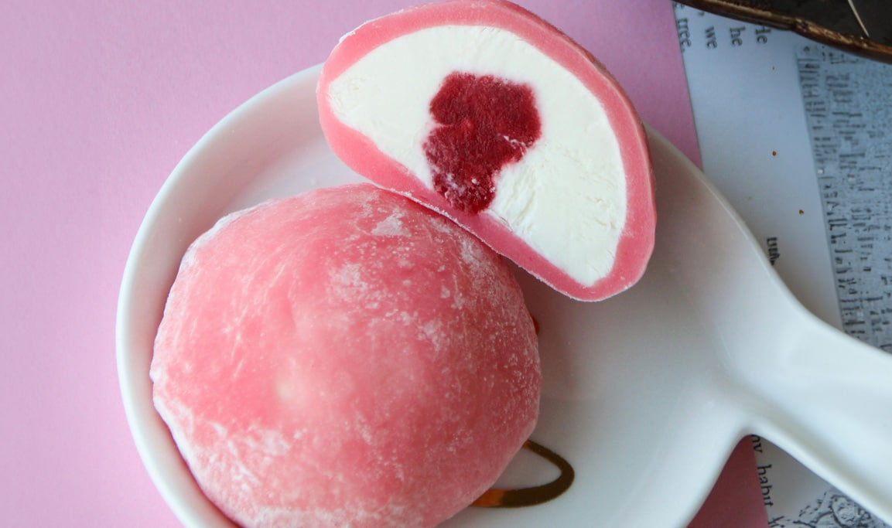
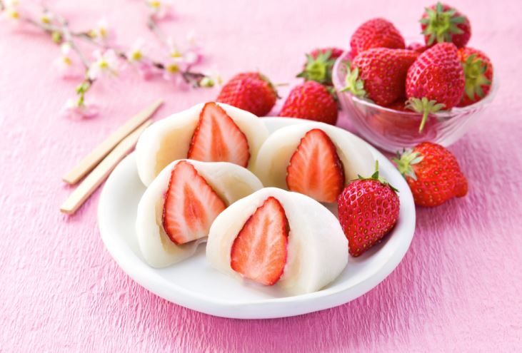
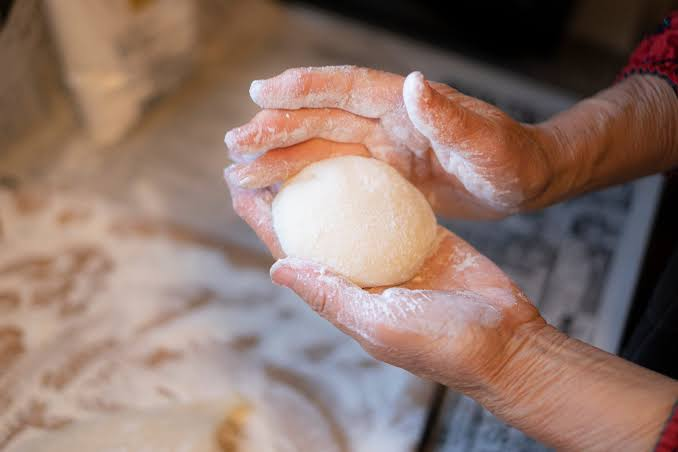
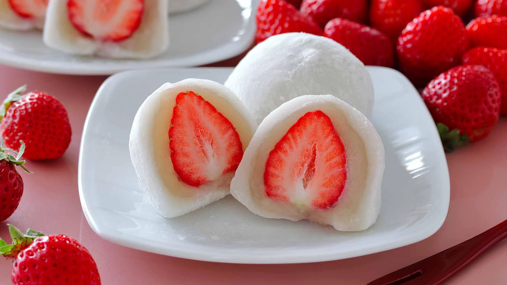

Receta Mochis de Fresa :D - Caseros
Descripción:
Los mochis son un postre tradicional japonés elaborado con una masa suave
y elástica hecha a base de harina de arroz glutinoso. En esta versión,
se rellenan con una crema dulce y fresas, creando una combinación de textura suave y sabor fresco.

Conoce esta información general que deberías saber antes de preparar tu mochi :D
- Tiempo aproximado de preparación:
45 minutos de preparación
- Número de porciones:
8 mochis aproximadamente
- Nivel de dificultad:
Medio
- Tipo de comida:
Postre / Repostería
- Lugar de origen:
Japón

Esta es la lista de ingredientes que usaremos para nuestra receta :D
Para la masa:
- 1 taza de harina de arroz glutinoso
- ¼ de taza de azúcar
- ¾ de taza de agua
- 1 cucharadita de aceite vegetal
- Fécula de maíz o almidón de maíz para trabajar la masa
Para el relleno:
- 8 fresas pequeñas
- ½ taza de crema para batir
- 2 cucharadas de azúcar
- ½ cucharadita de esencia de vainilla

Empezamos con los pasos a seguir para la preparación :D
- Preparar el relleno:
- Preparar la masa:
- Cocinar:
- Trabajar la masa:
- Dividir:
- Rellenar:
- Cerrar:
- Servir:
Lava y seca las fresas. Bate la crema con el azúcar y la vainilla hasta obtener una consistencia firme. Reserva en el refrigerador.
En un recipiente apto para microondas, mezcla la harina de arroz glutinoso, el azúcar y el agua hasta que no queden grumos.
Cubre el recipiente y cocina en el microondas durante aproximadamente 2 minutos. Retira, mezcla y vuelve a cocinar durante 1 minuto más, hasta que la masa esté espesa, pegajosa y ligeramente translúcida.
Espolvorea fécula de maíz sobre una superficie limpia y coloca la masa encima. Déjala enfriar unos minutos y espolvorea un poco más de fécula para evitar que se pegue.
Divide la masa en 8 partes aproximadamente iguales y aplana cada una formando pequeños círculos.
Coloca un poco de crema y una fresa en el centro de cada círculo.
Envuelve el relleno con la masa y une los bordes en la parte inferior, formando una bolita.
Retira el exceso de fécula de maíz y sirve los mochis. Puedes refrigerarlos unos minutos antes de consumirlos para que estén más firmes.

Tabla Nutricional de los Mochis :D
| Nutriente | Cantidad (por 100g) | % Valor Diario* |
|---|---|---|
| Calorías | 223 kcal | 11% |
| Carbohidratos | 49 g | 16% |
| Azúcares | 18 g | - |
| Proteínas | 3 g | 6% |
| Grasas | 0.5 g | 1% |
| Fibra | 1.2 g | 4% |
| Sodio | 10 mg | 0% |
*Valores diarios basados en una dieta de 2000 kcal.
¡Aquí te doy un videido para que te ayudes con tu receta! :D
Descripción del video:
Descubre el mundo de los mochis, un delicioso postre japonés conocido por su suave textura, sus diferentes sabores y sus llamativos rellenos. En este video podrás conocer más sobre este dulce y disfrutar de una experiencia gastronómica llena de color, sabor y tradición.
Te dejo una página con más información del origen de los mochis:
Historia del Mochi
Curiosidades sobre los Mochis :D :
- Son originarios de Japón:
- Su textura es muy particular:
- Tienen una larga historia:
- Son populares durante Año Nuevo:
- Existen muchísimos sabores:
- El mochi de helado es una versión moderna:
- Pueden tener muchos colores:
- Su preparación tradicional es especial:
- También tienen significado cultural:
- Su textura requiere cuidado al comerlo:
El mochi es un alimento tradicional japonés elaborado principalmente con arroz glutinoso.
Es conocido por ser suave, elástico y ligeramente pegajoso debido al tipo de arroz utilizado.
El mochi se consume en Japón desde hace muchos siglos y está relacionado con celebraciones y tradiciones.
El mochi forma parte de varias comidas tradicionales japonesas de Año Nuevo.
Además del tradicional relleno de pasta de frijol rojo (anko), actualmente se encuentran mochis de fresa, mango, té matcha, chocolate, helado y muchos más.
Consiste en una pequeña bola de helado cubierta con una fina capa de masa de mochi.
Los ingredientes utilizados para prepararlos pueden darles diferentes colores y apariencias.
Históricamente, el arroz glutinoso cocido se machacaba repetidamente hasta obtener una masa suave y elástica.
El mochi puede estar presente en festividades, ceremonias y otras ocasiones importantes de la cultura japonesa.
Los mochis tradicionales pueden ser bastante pegajosos, por lo que se recomienda comerlos en trozos pequeños y con calma.
De este maravilloso lugar, nacen los mochis:
Dato curioso sobre Japón :D
La comida japonesa es famosa en todo el mundo. Algunos platos tradicionales son el sushi, ramen, tempura y, por supuesto, los mochis.